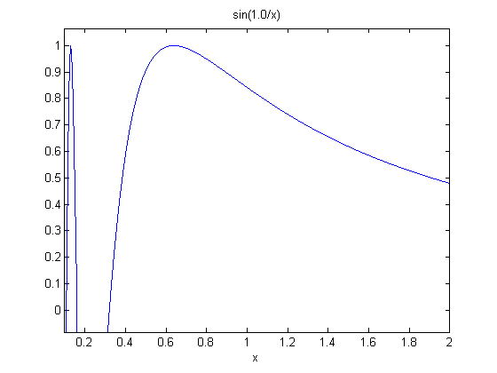
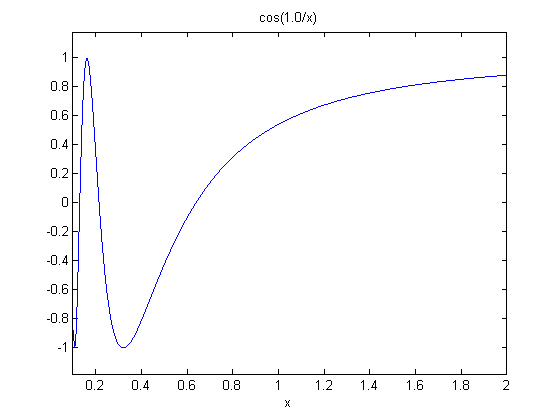

format LONGE;
sym x;
f1 = sym('sin(1.0/x)');
f2 = sym('cos(1.0/x)');
a = 0.100000;
b = 2.000000;
bound = 10^-3;
n = 2;
m = 3;
[f1_n, f1_appx] = AdaptQNC(f1, a, b, 2*n, m, bound, 0, 0);
[f2_n, f2_appx] = AdaptQNC(f2, a, b, 2*n, m, bound, 0, 0);
f1_exp = double(int(f1, a, b));
f2_exp = double(int(f2, a, b));
[f1Q, f1Count] = quad(inline(f1), a, b, bound);
[f2Q, f2Count] = quad(inline(f2), a, b, bound);
f1_e = abs(f1_appx-f1_exp);
f2_e = abs(f2_appx-f2_exp);
fprintf('===================================================================================================\n')
fprintf(' func appx expect error accept(0/1) subintervals expect n\n')
fprintf('---------------------------------------------------------------------------------------------------\n')
fprintf(' %s %2.8f %2.8f %2.8f %d %d %d\n', 'sin(1/x)', f1_appx, f1_exp, f1_e, f1_e<=10^-3, f1_n, f1Count)
fprintf('---------------------------------------------------------------------------------------------------\n')
fprintf(' %s %2.8f %2.8f %2.8f %d %d %d\n', 'cos(1/x)', f2_appx, f2_exp, f2_e, f2_e<=10^-3, f2_n, f2Count)
fprintf('===================================================================================================\n')
figure
ezplot(f1, [0.1, 2])
figure
ezplot(f2, [0.1, 2])
===================================================================================================
func appx expect error accept(0/1) subintervals expect n
---------------------------------------------------------------------------------------------------
sin(1/x) 1.14583135 1.14558083 0.00025051 1 21 25
---------------------------------------------------------------------------------------------------
cos(1/x) 0.67391599 0.67383210 0.00008389 1 21 25
===================================================================================================
 